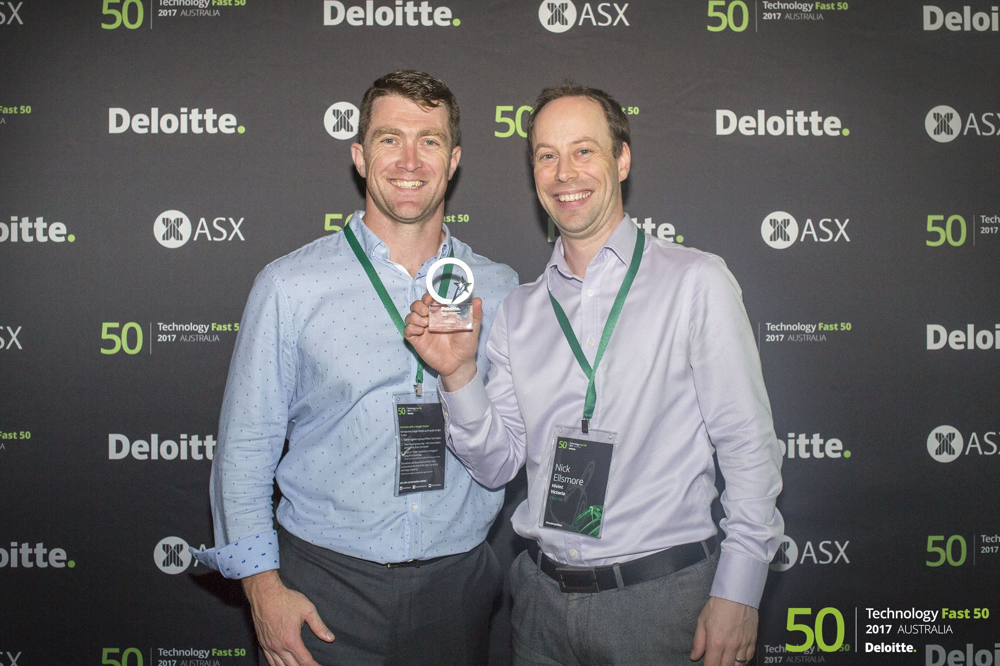
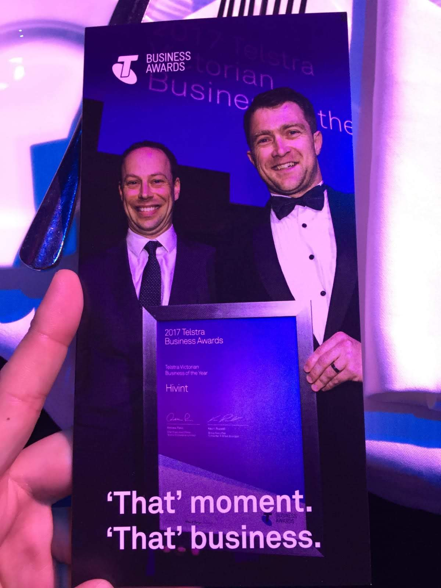
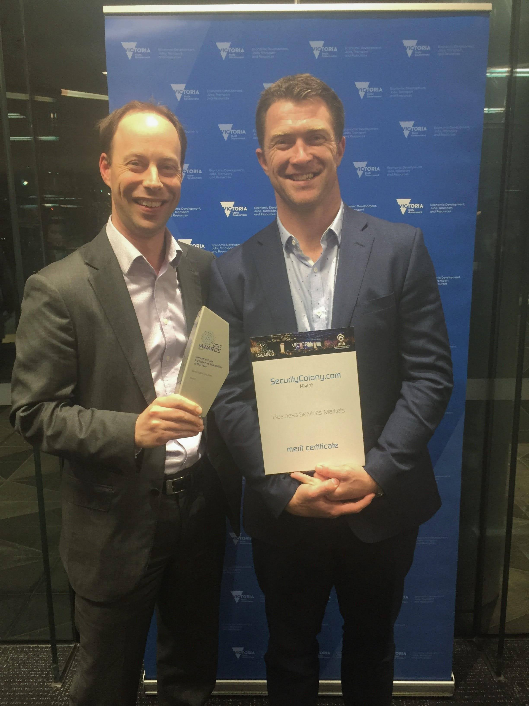

Private Equity · Search Fund · Australia
Polyveil is a private equity search fund backed by experienced operators and investors. We partner with business owners ready for their next chapter — bringing capital, deep operational expertise, and a long-term owner's mindset to every acquisition.
Get in TouchWhat We Do
We are not a passive investor. We are entrepreneurs and operators who have built, scaled, and exited businesses — and we bring that experience directly to the companies we acquire.
"We look for great businesses that have strong foundations, loyal customers, and an owner ready to transition — then we invest in making them exceptional."
The search fund model puts an experienced operator at the helm from day one. Unlike traditional private equity, we take a concentrated, hands-on approach — acquiring one exceptional business at a time and dedicating ourselves fully to its growth.
We are actively searching for businesses in IT services, financial advisory, and estate management across Australia. We prize recurring or repeat revenue models, stable customer relationships, and businesses where technology adoption represents an untapped opportunity for value creation.
Our founders have collectively founded, scaled, and sold multiple businesses for eight-figure exits. We know what it takes to build — and we know what a great business looks like from the inside.
Acquisition Criteria
We have a clear view of our target profile. If your business broadly fits these parameters, we'd like to hear from you.
Annual Revenue
$2M – $10M
Australian dollars. We are comfortable across this range and do not require a business to be at the upper end.
EBITDA
$400K – $3M
We look for a healthy and sustainable margin, with room to improve through operational focus and technology adoption.
Business Model
Recurring or Repeat
Service-based businesses with predictable, loyal customer bases. Contracted recurring revenue is preferred but not required.
Owner Profile
Actively Working
The owner is central to the business today — we step into that role with commitment and capability, enabling a genuine transition.
Technology Maturity
Medium-Low to Medium
We are drawn to businesses where digital tools and systems represent an upside — not a problem to manage.
Geography
Australia-first
Our primary focus is the Australian market. We are open to considering select opportunities in New Zealand.
Track Record
Our founders have not just raised capital — they have built companies from the ground up, navigated complex exits, and delivered exceptional returns to investors.
3
Companies founded, scaled, and successfully exited to global acquirers
~20x
Investor return on the Hivint exit — in under four years
25+
Years of combined experience at founder, CEO, and board level
SIFT
Built by Craig Searle and Nick Ellsmore. Sold to Stratsec, establishing the partnership that would define both founders' trajectories in Australian cybersecurity.
Scrip for ScripStratsec
Australia's leading cybersecurity firm, acquired by BAE Systems Australia in 2011. Nick Ellsmore served as a co-founder and senior leader through the exit.
Acquired by BAE Systems, 2011Hivint
Co-founded by Craig Searle and Nick Ellsmore. Acquired by Trustwave in 2018 — delivering investors a ~20x return in under four years.
~20x Return · Acquired by Trustwave, 2018Post-Exit Leadership
Following the Hivint acquisition, Nick joined Trustwave as SVP Worldwide Consulting & Professional Services — managing a USD$50M P&L and ~250 people across APAC, EMEA, and the Americas.
$50M P&L · Global Leadership
Deloitte Technology Fast 50
Hivint — 2017 Australia

Telstra Business Awards
Victorian Business of the Year — Hivint, 2017

iAwards 2017
SecurityColony — Infrastructure & Platform Innovation Finalist
The Team
Polyveil is led by two founders who have spent their careers building, leading, and selling technology businesses — and earning the trust of investors, boards, and acquirers along the way.
Founding Partner
Nick has founded, built, and sold two of Australia's leading cybersecurity companies. Stratsec was acquired by BAE Systems Australia in 2011. Hivint, which Nick co-founded with Craig Searle, was acquired by Trustwave in 2018 — delivering investors a ~20x return in under four years.
Following the Hivint acquisition, Nick joined Trustwave as part of the global leadership team, ultimately serving as SVP, Worldwide Consulting & Professional Services — a direct report to the CEO, managing a USD$50M P&L and a team of approximately 250 people across APAC, EMEA, and the Americas.
Most recently Nick served as Partner and Head of Cyber at Mantel Group, Australia's largest privately held IT services business, again reporting directly to the CEO.
Over 25 years Nick has operated at every level of the governance stack — as a founder making board and investor decisions, as a CEO navigating acquisitions, and as an SVP inside a large global organisation. He holds a Graduate qualification from the Australian Institute of Company Directors (GAICD) and has served on the boards of the Internet Industry Association (Director & Treasurer), UNSW advisory forums, Electronic Frontiers Australia (Vice Chair), and as an Australian delegate to the APEC Security & Prosperity Steering Group.
Founding Partner
Craig Searle is one of Australia's most experienced cybersecurity professionals, with a career spanning two decades advising and leading complex programs for banking and financial services, critical infrastructure, ASX200 enterprises, and federal and state government.
Craig built SIFT with Nick Ellsmore — an early and formative step in both founders' journeys — before going on to co-found Hivint, which was acquired by Trustwave in 2018 in an eight-figure exit that returned investors approximately 20x in under four years.
Craig brings a rare combination of deep technical expertise and genuine business acumen. He has led engagements at the most complex and sensitive end of IT security — from inception and pre-sales through to delivery and closure — while building and managing high-performing teams across concurrent, high-stakes programs.
Known for his ability to translate technical risk into board-level language, Craig has been quoted across major industry and mainstream media including ITWorld, CSOOnline, ComputerWorld, and the Sun-Herald. He excels at working closely with business owners and stakeholders to understand what matters, and at building the operational rigour to deliver it.
Get in Touch
Whether you're a business owner considering your next chapter, an intermediary working with a potential target, or an investor interested in the Polyveil thesis — we welcome the conversation.
We are discreet, direct, and genuinely interested in finding the right fit. There is no formula here — if you have a business that broadly matches our profile, or know someone who might, reach out.
Location
Australia
Primary Focus
IT Services · Financial Advisory · Estate Management